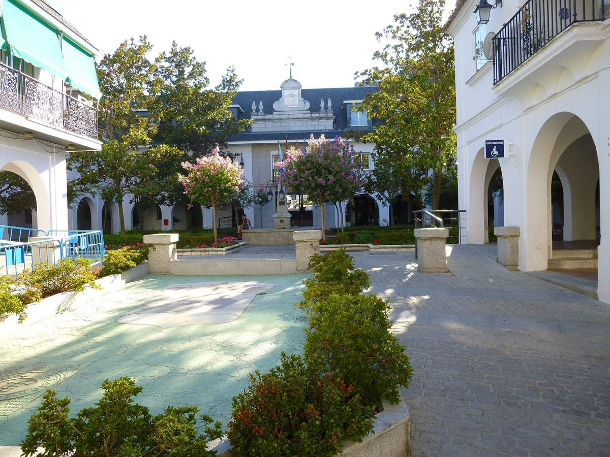

스페인 마하다온다시, 공공건물 11곳 지붕 781kWp 태양광 집단 자가소비 사업 입찰…부가세 포함 98만8,834유로

학교 7곳·체육관 2곳·경찰청사·도서관 지붕에 설치하고 5년 유지관리까지 한 계약으로 발주, 건물별 설치비·연간 절감액·회수 기간 공개…11월 30일 제안 마감, 시민 참여 요소는 없어
스페인 마드리드 자치주의 마하다온다(Majadahonda) 시청이 공공건물 11곳 지붕에 태양광을 설치하고 남는 전기를 상계하는 집단 자가소비 방식으로 쓰는 사업의 입찰을 열었다. 계약은 설계·공급·설치·가동부터 운영·유지관리까지 묶었으며, 설비는 최대 합계 781.26kWp, 인버터 718kW 규모다. 예산은 설치비 72만7,122.51유로와 5년 유지관리비 9만96.29유로를 더한 81만7,218.81유로(부가세 제외)로, 부가세를 포함하면 98만8,834.76유로다. 대상은 지역경찰 청사, 체육관 2곳, 공립학교 7곳, 도서관 1곳이며 입찰 내용에는 건물마다 용량과 설치비, 연간 절감 예상액, 회수 기간이 들어 있는데, 지역경찰 청사는 31.82kWp에 설치비 3만3,966.32유로, 연 절감 7,187.76유로로 6.34년, 프린시페 펠리페 체육관은 52.02kWp에 연 절감 1만1,773.71유로로 6.55년 만에 투자비를 회수하는 것으로 계산됐고 건물별 회수 기간은 4.96~7.22년이다. 입찰은 일반 공개경쟁으로 진행되며 제안서 마감은 2026년 11월 30일, 전체 계약 기간은 5년이다. 이번 사업은 시청이 시 건물끼리 전기를 나눠 쓰는 것으로, 시민이 출자하거나 주변 주민이 전기를 나눠 받는 요소는 들어 있지 않다.
시민에너지 관점
건물마다 용량·설치비·절감액·회수 기간을 입찰 단계에서 공개한 것은 공공 태양광이 세금을 얼마나 아끼는지 시민이 직접 따져 볼 수 있게 한 점에서 눈여겨볼 만하고, 4.96~7.22년이라는 회수 기간은 공공건물 지붕이 그 자체로 손해 보지 않는 자산임을 보여 준다. 공공건물 태양광은 시 예산을 아끼는 것으로 충분하다는 반론도 있을 수 있지만, 이번 사업에는 시민이 출자하거나 이웃 주민이 전기를 받을 길이 없어 그 절감 이익이 시 재정 안에만 머문다. 같은 지붕이라도 주민이 출자한 협동조합이 짓고 시청이 그 전기를 사 쓰거나 주변 가구와 나누는 구조라면, 시의 초기 부담을 덜면서 수익이 주민에게도 돌아갈 수 있다. 국내 공공건물 태양광도 건물별 경제성을 공개하고, 그 지붕을 주민 출자와 함께 쓰는 방식을 발주 단계의 선택지로 넣어야 한다.
출처: pv magazine España 2026-10-28 Jose Pedrosa 원문 보기
スペイン・マハダオンダ市、公共施設11カ所の屋根に781kWpの太陽光を設置する集団自家消費事業を入札…付加価値税込み98万8,834ユーロ
学校7校・体育館2カ所・警察庁舎・図書館の屋根に設置し5年間の保守まで一括発注、施設ごとの設置費・年間節減額・回収期間を公開…11月30日に提案締め切り、市民参加の要素はなし
スペイン・マドリード州のマハダオンダ（Majadahonda）市役所が、公共施設11カ所の屋根に太陽光発電を設置し、余剰電力を相殺する集団自家消費の方式で使う事業の入札を始めた。契約は設計・供給・設置・稼働から運営・保守までを一括にしたもので、設備は最大合計781.26kWp、インバーター718kWの規模となる。予算は設置費72万7,122.51ユーロと5年間の保守費9万96.29ユーロを合わせた81万7,218.81ユーロ（付加価値税抜き）で、付加価値税を含めると98万8,834.76ユーロになる。対象は地域警察の庁舎、体育館2カ所、公立学校7校、図書館1カ所で、入札内容には施設ごとの容量、設置費、年間の節減見込み額、回収期間が示されており、地域警察の庁舎は31.82kWpで設置費3万3,966.32ユーロ、年間節減7,187.76ユーロにより6.34年、プリンシペ・フェリペ体育館は52.02kWpで年間節減1万1,773.71ユーロにより6.55年で投資を回収すると試算され、施設ごとの回収期間は4.96～7.22年となっている。入札は一般競争で行われ、提案書の締め切りは2026年11月30日、契約期間は全体で5年。今回の事業は市役所が市の施設同士で電気を分け合うもので、市民による出資や周辺住民への電力の分配といった要素は含まれていない。
市民エネルギーの視点
施設ごとの容量・設置費・節減額・回収期間を入札の段階で公開したことは、公共太陽光が税金をどれだけ節約するのかを市民が自ら確かめられるようにした点で注目に値し、4.96～7.22年という回収期間は公共施設の屋根がそれ自体で損をしない資産であることを示している。公共施設の太陽光は市の予算を節約できれば十分だという反論もありうるが、今回の事業には市民が出資したり近隣住民が電気を受け取ったりする道がなく、その節減の利益は市の財政の中にとどまる。同じ屋根でも、住民が出資した協同組合が設備を建て、市役所がその電気を買って使ったり周辺の世帯と分け合ったりする仕組みであれば、市の初期負担を軽くしながら収益を住民にも還元できる。韓国の公共施設の太陽光も施設ごとの経済性を公開し、その屋根を住民出資とともに活用する方式を発注段階の選択肢に加えるべきだ。
出典: pv magazine España 2026-10-28 ホセ・ペドロサ（Jose Pedrosa） 原文を読む
西班牙马哈达翁达市为11处公共建筑屋顶781kWp光伏集体自用项目招标…含增值税98万8,834欧元
在7所学校、2座体育馆、警察局和图书馆屋顶安装，连同5年运维一并发包，公开各建筑的安装费、年节省额和回收期…11月30日截止投标，项目不含市民参与环节
西班牙马德里自治区的马哈达翁达（Majadahonda）市政府已启动招标，在11处公共建筑屋顶安装光伏，以余电抵扣的集体自用方式使用所发电力。合同把设计、供货、安装、投运直至运营和维护打包在一起，设备最大总容量781.26kWp，逆变器容量718kW。预算为安装费72万7,122.51欧元加5年运维费9万96.29欧元，共81万7,218.81欧元（不含增值税），含增值税为98万8,834.76欧元。项目对象为地方警察局、2座体育馆、7所公立学校和1座图书馆，招标内容列出了每栋建筑的容量、安装费、预计年节省额和回收期：地方警察局为31.82kWp，安装费3万3,966.32欧元，年节省7,187.76欧元，6.34年收回投资；王子费利佩体育馆为52.02kWp，年节省1万1,773.71欧元，6.55年收回投资；各建筑的回收期在4.96至7.22年之间。招标采用一般公开竞争方式，投标截止日期为2026年11月30日，合同总期限为5年。这一项目是市政府在市属建筑之间共享电力，不包含市民出资或向周边居民分配电力的内容。
市民能源视角
在招标阶段就公开每栋建筑的容量、安装费、节省额和回收期，让市民可以亲自核算公共光伏为财政省下多少钱，这一点值得关注；4.96至7.22年的回收期也表明，公共建筑屋顶本身就是不会亏本的资产。也许有人认为公共建筑光伏能节省市政预算就足够了，但这个项目没有给市民出资或邻近居民用电留出渠道，节省下来的利益只留在市财政之内。同样的屋顶，如果由居民出资的合作社建设、市政府购买其电力自用或与周边家庭分享，就能在减轻市政府初期负担的同时，让收益也回到居民手中。韩国的公共建筑光伏也应公开各建筑的经济性，并在发包阶段把与居民出资共同利用屋顶的方式纳入选项。
来源: pv magazine España 2026-10-28 Jose Pedrosa 查看原文
Spanish town of Majadahonda tenders 781kWp of rooftop solar on 11 public buildings for collective self-consumption, at €988,834 including VAT
Installation on seven schools, two sports centres, a police station and a library is bundled with five years of maintenance, with each building's installation cost, annual savings and payback period published; bids close on 30 November, and the scheme has no citizen participation
The town council of Majadahonda in the Community of Madrid, Spain, has opened a tender to install solar panels on the roofs of 11 public buildings and use the power through collective self-consumption with compensation for surplus electricity. The contract bundles design, supply, installation and commissioning with operation and maintenance, for a combined maximum of 781.26kWp and 718kW of inverter capacity. The budget is €817,218.81 before VAT, made up of €727,122.51 for installation and €90,096.29 for five years of maintenance, or €988,834.76 including VAT. The sites are the local police station, two sports centres, seven public schools and a library, and the tender sets out each building's capacity, installation cost, expected annual savings and payback period: the police station, at 31.82kWp, costs €33,966.32 to install and should save €7,187.76 a year for a payback of 6.34 years, while the Príncipe Felipe sports centre, at 52.02kWp, should save €11,773.71 a year and pay back in 6.55 years, with payback periods across the buildings ranging from 4.96 to 7.22 years. The tender is an open procedure, bids are due by 30 November 2026, and the contract runs for five years in total. The scheme shares power among municipal buildings only and includes no citizen investment or supply to nearby residents.
Citizen Energy View
Publishing each building's capacity, installation cost, savings and payback at the tender stage is worth noting because it lets citizens check for themselves how much public solar saves taxpayers, and payback periods of 4.96 to 7.22 years show that public roofs are, in themselves, assets that do not lose money. Some may argue that saving the town money is enough for public-building solar, but because this scheme offers no way for citizens to invest or for neighbours to receive power, the savings stay inside the municipal budget. If the same roofs were built on by a co-operative funded by residents, with the council buying the power or sharing it with nearby households, the town's upfront burden could be eased while the returns also reached residents. Korea's public-building solar should likewise publish the economics of each building and include, at the procurement stage, the option of using those roofs together with resident investment.
Source: pv magazine España 2026-10-28 Jose Pedrosa Read the original